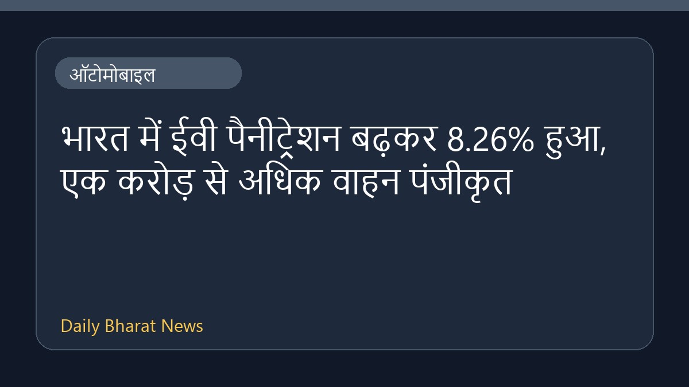

भारत में ईवी पैनीट्रेशन बढ़कर 8.26% हुआ, एक करोड़ से अधिक वाहन पंजीकृत

मनीकंट्रोल डॉट कॉम की ऑटोमोबाइल समाचार रिपोर्ट के अनुसार, भारत में इलेक्ट्रिक वाहनों का प्रसार यानी ईवी पैनीट्रेशन बढ़कर 8.26 प्रतिशत तक पहुंच गया है। इसके साथ ही देश में पंजीकृत कुल इलेक्ट्रिक वाहनों की संख्या एक करोड़ का आंकड़ा पार कर गई है। यह आंकड़े देश के ऑटोमोबाइल सेक्टर में इलेक्ट्रिक मोबिलिटी की ओर बढ़ते रुझान और बढ़ते हुए उपयोग को दर्शाते हैं। वर्तमान में उपलब्ध जानकारी इतनी ही है और इस विषय पर विस्तृत विवरण सीमित हैं।
मूल स्रोत: Automobile News Sources
India's EV penetration rises to 8.26%, registered electric vehicles cross 1 crore - Moneycontrol.com ↗
India's EV penetration rises to 8.26%, registered electric vehicles cross 1 crore - Moneycontrol.com ↗